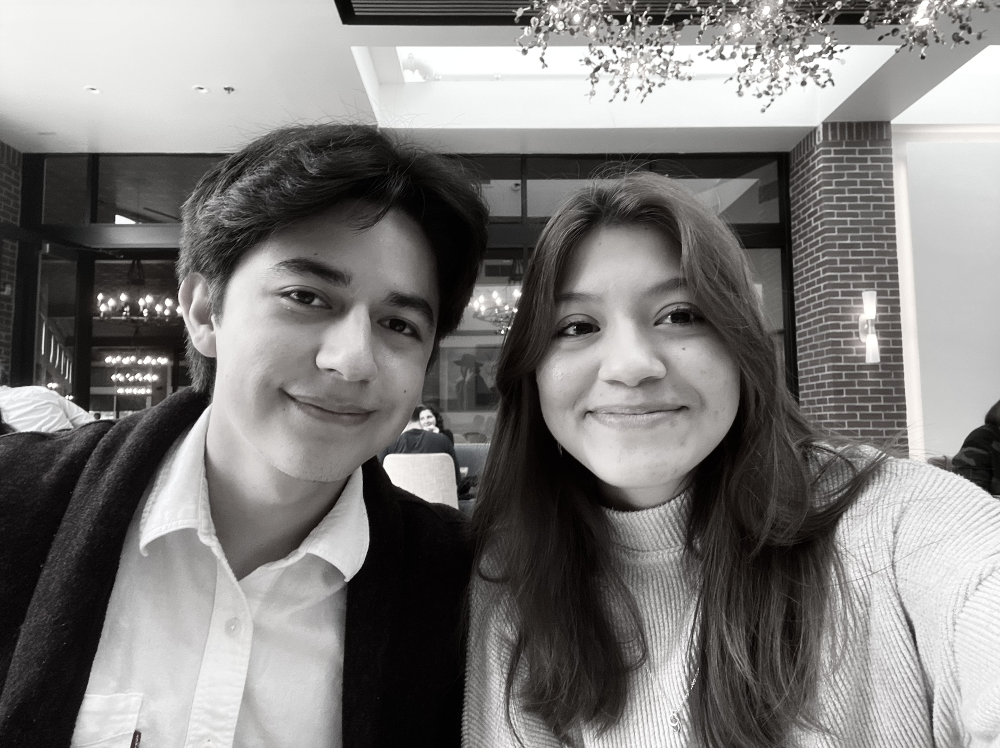
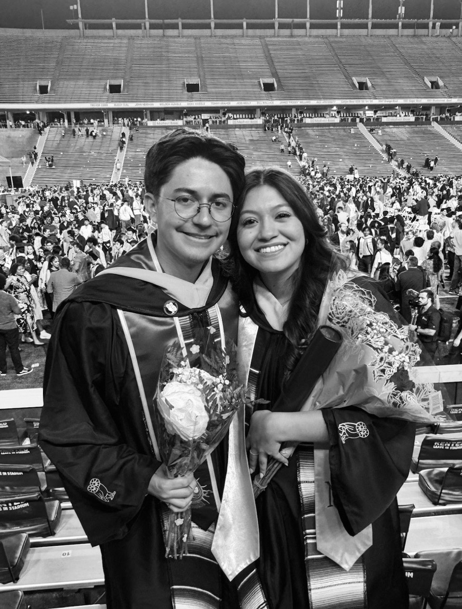
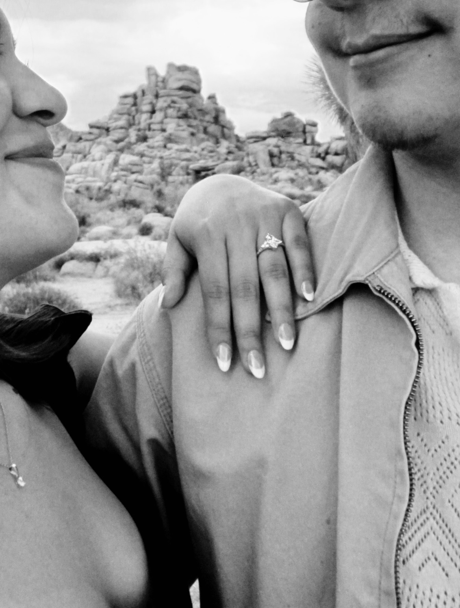

Nuestra Historia

Al comienzo de nuestro segundo año de universidad, los dos asistimos por primera vez a un evento de SHPE.

Seguimos involucrados en SHPE durante el resto de la carrera y nos graduamos en mayo de 2025.

Daniel le pidió matrimonio a Lizeth en el Parque Nacional Joshua Tree, y Lizeth dijo que sí.
← Volver a la Invitación